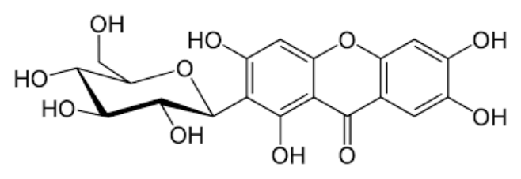
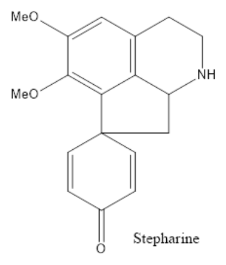

開卷有益 ／
藥師 ／ 藥物分析與生藥學 ／ 110 年第 2 次110 年第 2 次藥師藥物分析與生藥學試題與答案
這一頁是民國 110 年第 2 次藥師藥物分析與生藥學的整份歷屆試題，共 80 題，題目與標準答案出自考選部「國家考試試題及測驗式試題答案」開放資料，其中 75 題附有詳解。以下逐題列出題幹、選項與答案；要計時作答或記錄成績，請用線上練習。
考選部原始場次代碼：110101
線上作答這一科 →
全部 80 題
第 1 題
I2、SO2、C5H5N、CH3OH 為X測定法的試劑，主要用來測定Y的含量，X與Y依序應為下列何者？
（A） Karl Fischer；水（B） Kjeldahl；氮（C） Fehling；糖（D） Volhard；氯答案：（A）
詳解與考點 正解：I2、SO2、C5H5N 與 CH3OH 是經典 Karl Fischer 試劑的組成，水分會在此反應中以化學計量方式消耗碘，因此 X 為 Karl Fischer 測定法、Y 為水，故選 A。
B：Kjeldahl 法用於測定氮，核心是消化後將氮轉為可定量的銨，再進行蒸餾與滴定，試劑組合不是題述各物質。
C：Fehling 試劑以鹼性銅錯合物檢測還原糖，判讀重點是 Cu(II) 還原生成氧化亞銅，不是碘與二氧化硫反應。
D：Volhard 法是銀量法，可用於鹵離子如氯離子的測定，涉及銀離子與硫氰酸根，和 Karl Fischer 試劑不同。
本題考點：Karl Fischer 水分測定（Karl Fischer titration）——看到 I2、SO2、含氮鹼與醇的試劑組合時，優先判定為水分的化學計量測定；方法試劑指紋（analytical reagent fingerprint）——用關鍵試劑組合辨別分析法，比只依被測物名稱反推更可靠。
第 2 題
依據中華藥典，有關六次甲四胺（hexamine, 分子量：140.2 g/mol）之含量測定，下列敘述何者錯誤？
（A） 為鹼滴定法，利用1 N 氫氧化鈉為滴定液（B） 加入過量1 N 硫酸，煮沸後之產物為甲醛及硫酸銨（C） 必要時可用變色酸（chromotropic acid）溶液測試六次甲四胺是否分解完全（D） 此含量測定法中，六次甲四胺之1當量重為35.05 g答案：（A）
詳解與考點 正解：六次甲四胺的測定先以過量硫酸使其分解，再以氫氧化鈉反滴定剩餘酸；（A）把此法說成以氫氧化鈉直接滴定六次甲四胺的鹼滴定法，錯置了反應角色，故選 A。
B：六次甲四胺在過量硫酸中煮沸可生成甲醛與硫酸銨，這正是後續反滴定得以成立的反應基礎，敘述正確。
C：變色酸可用來確認反應中甲醛的生成，必要時可協助判定六次甲四胺是否已分解完全，故非答案。
D：六次甲四胺每 mol 反應相當於 4 eq，故當量重為 140.2 g/mol / 4 eq/mol = 35.05 g/eq，敘述正確。
本題考點：反滴定（back titration）——若待測物先消耗已知過量的酸，再滴定剩餘酸，應把計量依據放在最初加入的酸而非反滴定用鹼；當量重（equivalent weight）——先由反應式判定每 mol 對應的 eq 數，再以分子量除以 eq/mol 計算。
第 3 題
下列何種指示劑常用於弱酸的非水滴定分析？
（A） 偶氮紫（azo violet）（B） 孔雀石綠（malachite green）（C） 結晶紫（crystal violet）（D） 喹吶啶紅（quinaldine red）答案：（A）
詳解與考點 正解：弱酸在非水滴定時須選擇變色範圍適合鹼性滴定介質的指示劑，azo violet 是常用配對，故選 A。
B：malachite green 雖可用於非水滴定，但較適合弱鹼的非水酸滴定條件，不是本題弱酸分析的常用指示劑。
C：crystal violet 也是常見非水滴定指示劑，容易因同屬非水分析而看似合適；分辨關鍵在其通常用於以強酸滴定弱鹼，和本題方向相反。
D：quinaldine red 的變色條件適合非水酸滴定弱鹼，並非弱酸非水滴定的標準選擇。
本題考點：非水滴定指示劑（nonaqueous titration indicators）——選指示劑時先判待測物是弱酸或弱鹼，再配對滴定劑與溶媒的酸鹼方向；弱酸非水滴定（nonaqueous titration of weak acids）——弱酸在水中終點不清楚時，應選可提供較強鹼性反應環境及相應變色區間的系統。
第 4 題
一個分析方法適用之檢品濃度範圍與下列何者有關？
（A） 靈敏度（sensitivity）（B） 選擇性（selectivity）（C） 重覆性（repeatability）（D） 再現性（reproducibility）答案：（A）
詳解與考點 正解：分析方法能適用的檢品濃度範圍，取決於訊號隨濃度改變而可被可靠分辨的能力，也就是靈敏度（sensitivity），故選 A。
B：選擇性（selectivity）是方法在共存物質下辨識目標分析物的能力，處理的是干擾問題，不是可用濃度範圍。
C：重覆性（repeatability）衡量同一條件下重複測定的精密度；結果可以很一致，仍不代表方法涵蓋較寬濃度範圍。
D：再現性（reproducibility）比較不同實驗室、人員或條件下的精密度，與儀器反應對濃度的變化幅度不同。
本題考點：靈敏度（sensitivity）——判斷方法能否涵蓋低至高濃度時，先看分析訊號對濃度變化的反應能力；方法確效（analytical method validation）——選擇性管干擾，重覆性與再現性管精密度，三者不可代替濃度範圍的判讀。
第 5 題
以甲苯蒸餾法測定生藥中水分含量，下列敘述何者錯誤？
（A） 低於100℃時水與甲苯會共沸蒸出（B） 蒸餾液收集於水分管（moisture tube），由刻度讀取上層水之體積（C） 一般而言，檢品取量以能蒸餾出2～4 mL的水為度（D） 甲苯可以用二甲苯（xylene）取代答案：（B）
詳解與考點 正解：甲苯蒸餾法的水分管會形成兩層液體，因水的密度大於甲苯，水位於下層、甲苯位於上層；（B）把水的體積寫成讀取上層，故選 B。
A：水與甲苯可在低於 100℃ 的條件下共沸蒸出，藉此將生藥中的水帶入收集管，敘述正確。
C：一般以蒸出約 2～4 mL 水為合宜檢品取量，可兼顧刻度讀取與操作可行性，故非答案。
D：xylene 同樣可作為與水不互溶的蒸餾載體，在適當方法條件下可取代甲苯，敘述正確。
本題考點：共沸蒸餾水分測定（azeotropic distillation for water determination）——利用與水不互溶的有機溶媒共蒸餾，把水帶到刻度收集管定量；液層判讀（liquid-layer identification）——先比較密度，甲苯或 xylene 層在上、水層在下，讀值不可顛倒。
第 6 題
在非水滴定時，下列何者最常用於配置0.1 N的過氯酸試劑？
（A） 98% 過氯酸（B） 70% 過氯酸水溶液（C） 1 N過氯酸水溶液（D） 1 N過氯酸甲醇溶液答案：（B）
詳解與考點 正解：非水滴定常用的 0.1 N 過氯酸試劑，通常以 70% 過氯酸水溶液作為濃縮原料，再配入適當非水溶媒製備，故選 B。
A：98% 過氯酸並非配製此常用試劑的標準原料選擇；濃度過高且操作性不如 70% 過氯酸水溶液。
C：1 N 過氯酸水溶液已是稀釋水溶液，會帶入較多水分，不能作為非水滴定常用過氯酸試劑的優先來源。
D：1 N 過氯酸甲醇溶液的溶媒條件與常用配製系統不同，不能取代以 70% 過氯酸水溶液製備的標準方式。
本題考點：非水酸滴定（nonaqueous acidimetry）——配製過氯酸滴定液時，先確認濃縮酸原料與目標非水溶媒是否相容；水分控制（water control）——非水滴定中帶入的水會改變酸鹼平衡與終點，原料選擇必須兼顧後續除水與標定。
第 7 題
有關以澱粉做為指示劑之敘述，下列何者錯誤？
（A） 於微酸性環境中靈敏度較大（B） 強電解質溶液會使其靈敏度降低（C） 可用於高濃度碘之滴定，於滴定前加入（D） 因澱粉液易變質，須每日新鮮配製答案：（C）
詳解與考點 正解：澱粉與碘形成深色複合物，但在碘濃度高時過早加入會使碘被強烈吸附，造成終點遲滯或不銳利；（C）說可在高濃度碘滴定前加入，故選 C。
A：澱粉指示劑在微酸性環境中靈敏度較佳，這有利於碘量法終點的顏色判讀，敘述正確。
B：強電解質可降低澱粉與碘複合物的靈敏度，因此此項是正確敘述。
D：澱粉液容易變質，應每日新鮮配製以維持指示反應可靠性，故非答案。
本題考點：澱粉指示劑（starch indicator）——碘量滴定須等游離碘濃度降到接近終點時才加入澱粉，以取得銳利變色；碘澱粉複合物（iodine-starch complex）——判讀靈敏度時同時留意酸鹼環境、電解質與澱粉溶液的新鮮度。
第 8 題 待校
中華藥典中規定之比合液係用於下列何項雜質檢查？
（A） 重金屬（B） 易碳化物（C） 殘留溶劑（D） 氯化物答案：（B）
第 9 題
於測定某橄欖油的碘價時，若每公克檢品可吸收0.8公克的碘，則下列有關此油之敘述何者正確？
（A） 碘價為0.8，屬於乾性油（B） 碘價為0.8，屬於非乾性油（C） 碘價為80，屬於乾性油（D） 碘價為80，屬於非乾性油答案：（D）
詳解與考點 正解：碘價以每 100 g 油脂可吸收的碘克數表示。題目給每 1 g 檢品吸收 0.8 g 碘，換算為 100 g 檢品時為 0.8 g/g × 100 g = 80 g，因此碘價為 80。碘價 80 反映不飽和度較低，屬非乾性油，故選 D。
A、B：兩者都把每公克檢品的吸收量 0.8 g 直接當成碘價，漏掉碘價以每 100 g 檢品為基準的換算。A 的乾性油分類也不對；B 雖寫非乾性油，數值仍錯。
C：碘價 80 的數值正確，但乾性油須有較高不飽和度，能在空氣中氧化聚合形成油膜；橄欖油的此數值不符合該分類。
本題考點：碘價（iodine value）——先把吸收碘量換算為每 100 g 油脂的克數，再判讀不飽和度；乾性油分類（drying oil classification）——碘價愈高代表雙鍵愈多，判斷能否氧化成膜時不能只看單位檢品的吸收量。
第 10 題
下列何者是固相萃取之缺點？
（A） 溶劑需求量大（B） 易出現乳化現象（C） 可能產生不可逆吸附（D） 可濃縮檢品答案：（C）
詳解與考點 正解：固相萃取的關鍵步驟是讓分析物在固相吸附劑上保留，再以適當溶劑洗脫；若分析物與吸附劑作用過強，就可能無法完全洗脫，造成不可逆吸附與回收率下降，故選 C。
A：固相萃取通常比液液萃取使用更少有機溶劑，節省溶劑是其常見優點，不是缺點。
B：乳化主要是液液萃取時兩液相界面不易分離的問題；固相萃取以填充吸附劑保留樣品，通常可避免此現象。
D：將較大體積樣品吸附後以小體積洗脫液回收，可提高分析物濃度，是固相萃取的濃縮優勢。
本題考點：固相萃取（solid-phase extraction）——判斷優缺點時看吸附、洗滌與洗脫三步是否能兼顧選擇性和回收率；不可逆吸附（irreversible adsorption）——分析物與固定相結合過強而無法洗脫時，應優先懷疑回收率損失。
第 11 題
GC-MS不適用於下列何者之分析？
（A） 揮發油之成分（B） 抗體藥物之不純物（C） 小分子藥物製程之中間產物（D） 尿液中之管制藥品及其代謝物答案：（B）
詳解與考點 正解：GC-MS 的前提是待測物可在進樣口與管柱操作溫度下揮發且不易熱分解。抗體藥物為高分子蛋白質，通常不揮發、受熱易變性或分解，難以直接用 GC-MS 分析，較適合以液相分離搭配質譜，故選 B。
A：揮發油含多種可揮發的低分子成分，GC 可先分離，再由 MS 提供質譜鑑別，正是典型應用。
C：小分子藥物的製程中間產物若具足夠揮發性與熱穩定性，可直接分析；必要時也可衍生化後使用 GC-MS。
D：尿液中的管制藥品及其代謝物可經萃取、衍生化等前處理後進入 GC-MS，常用於毒物與藥物濫用分析。
本題考點：氣相層析質譜（gas chromatography–mass spectrometry）——先判斷分析物是否揮發且耐熱，再決定 GC-MS 是否合適；蛋白質質譜（protein mass spectrometry）——大分子生物藥不宜強迫汽化，通常以液相分離與軟性離子化策略處理。
第 12 題
關於紅外光光譜測定法在結構鑑定的應用敘述，下列何者錯誤？
（A） 600～950 cm-1間廣泛用於解析化合物的詳細結構（B） C≡N的stretching band約在2200～2300 cm-1（C） 醯胺基之N-H stretching band約在3100～3400 cm-1（D） 芳香環之C=C stretching band約在1500 cm-1和1600 cm-1答案：（A）
詳解與考點 正解：紅外光譜主要用於辨認官能基與比對指紋區特徵；600～950 cm-1 僅是指紋區的一部分，峰形常彼此重疊，不能概括為廣泛用來解析化合物的詳細結構。因此（A）把此區域的用途說得過度，故選 A。
B：C≡N 的 stretching band 通常落在約 2200～2300 cm-1，這是腈基辨識的重要吸收區，敘述正確，故非答案。
C：醯胺基的 N-H stretching band 常在約 3100～3400 cm-1 出現，實際峰形會受氫鍵影響，敘述的範圍正確，故非答案。
D：芳香環的 C=C stretching band 常在約 1500 cm-1 與 1600 cm-1 顯現，兩個吸收帶可作為芳香環的輔助判別線索，敘述正確，故非答案。
本題考點：紅外光譜區域判讀（infrared spectral regions）——官能基區用來鎖定特徵鍵結，指紋區用於比對而非單獨完成完整結構解析；伸縮振動（stretching vibration）——看到 C≡N、N-H 或芳香環 C=C 時，先以其典型波數區間交叉核對。
第 13 題
在氫核磁共振譜中，其化學位移的範圍為何（ppm）？
（A） -1～15（B） -1～30（C） -5～125（D） -5～250答案：（A）
詳解與考點 正解：氫核磁共振的化學位移以 TMS 附近的 0 ppm 為參考，多數氫訊號約分布在 -1～15 ppm；高屏蔽氫可略低於 0 ppm，醛基或羧酸氫則可出現在較低磁場端，故選 A。
B：30 ppm 已遠超過一般 ^1H NMR 的常用化學位移範圍，不能作為氫核磁共振的標準範圍。
C：125 ppm 的範圍較接近其他核種可涵蓋的尺度，遠大於一般氫訊號的位移區間。
D：250 ppm 同樣不是 ^1H NMR 的通常範圍；氫譜判讀應先以約 0～15 ppm 的尺度定位訊號。
本題考點：氫核磁共振（^1H NMR）——先以 0～15 ppm 的常用尺度判斷是否屬氫譜訊號；化學位移（chemical shift）——由遮蔽與去遮蔽造成的位移辨識氫所處化學環境，不可套用其他核種的範圍。
第 14 題
關於核磁共振法的敘述，下列何者錯誤？
（A） 均以連續的無線電波進行激發（B） 氘化溶劑常用於配置測試樣品（C） 300 MHz核磁共振儀代表氫的共振頻率約為300 MHz（D） 儀器的磁場強度越強，其靈敏度和解析度愈高答案：（A）
詳解與考點 正解：現代核磁共振常採脈衝式無線電波激發，再以傅立葉轉換取得頻譜，並非所有儀器都以連續波方式激發；（A）的「均以連續」不正確，故選 A。
B：氘化溶劑可減少溶劑 ^1H 訊號干擾，並提供鎖場所需的氘訊號，敘述正確，故非答案。
C：300 MHz 核磁共振儀的命名通常指該磁場下氫核的 Larmor 共振頻率約為 300 MHz，敘述正確，故非答案。
D：較高磁場可增加核磁訊號的靈敏度與化學位移的頻率分散度，通常有利於解析度提升，敘述正確，故非答案。
本題考點：傅立葉轉換核磁共振（Fourier transform NMR）——看到現代 NMR 儀器時，應以脈衝激發加上訊號傅立葉轉換為基本架構；氘化溶劑（deuterated solvent）——配製樣品時同時考慮降低溶劑氫峰與提供鎖場訊號。
第 15 題
稱取甘露醇400 mg，以鉬酸銨溶液溶解過濾後，加稀硫酸稀釋至100 mL混勻，在25℃時以10 cm貯液管測定旋 光度，計算所得比旋光度為+150～+160，則所測得旋光度約為多少？
（A） +0.40°（B） +0.50°（C） +0.80°（D） +0.62°答案：（D）
詳解與考點 正解：比旋光度以 [α] = α/(l × c) 計算，其中 l 用 dm、c 用 g/mL；本題已給比旋光度範圍，所以要反算觀測旋光度。先換算濃度：400 mg = 0.400 g，0.400 g/100 mL = 0.00400 g/mL。再換算光徑：10 cm = 1 dm。故 α = [α] × l × c = (+150～+160) × 1 dm × 0.00400 g/mL = +0.600～+0.640°，約為 +0.62°，故選 D。
A：若觀測值為 +0.40°，回算 [α] = +0.40°/(1 dm × 0.00400 g/mL) = +100，不在題給的 +150～+160 範圍內。
B：若觀測值為 +0.50°，回算 [α] = +0.50°/(1 dm × 0.00400 g/mL) = +125，仍低於題給範圍。
C：若觀測值為 +0.80°，回算 [α] = +0.80°/(1 dm × 0.00400 g/mL) = +200，高於題給範圍。
本題考點：比旋光度（specific rotation）——先確認濃度是 g/mL、光徑是 dm，再代入 [α] = α/(l × c)；單位換算（unit conversion）——旋光度計算中，mg 轉 g 與 cm 轉 dm 各少做一步都會使結果偏離。
第 16 題
在紫外光光譜中，中藥麻黃主成分ephedrine的最大吸收波長約為250 nm，其來自於下列何種電子能階躍升？
（A） n→π*（B） π→π*（C） σ→π*（D） σ→σ*答案：（B）
詳解與考點 正解：ephedrine 含有苯環，其約 250 nm 的紫外吸收主要來自芳香共軛 π 電子躍遷至 π* 軌域；π→π* 為強度較高的允許躍遷，故選 B。
A：n→π* 通常涉及孤對電子與 π* 軌域，例如羰基化合物；苯環主導的吸收並非此類躍遷。
C：σ→π* 不是判讀芳香環常見紫外吸收時的主要躍遷類型，與題幹的共軛 π 系統不符。
D：σ→σ* 需要更高能量，常落在遠紫外區；250 nm 的苯環吸收不以此躍遷解釋。
本題考點：紫外光電子躍遷（UV electronic transition）——含芳香環或共軛雙鍵的吸收先優先判為 π→π*；發色團（chromophore）——由分子中可吸收紫外光的 π 系統判斷吸收帶來源，而非只看是否含有雜原子。
第 17 題
關於折光率測定之敘述，下列何者正確？
（A） Laurent half-shadow polarimeter為折光率測定儀（B） 中華藥典中規定所使用之光源為氘燈（C） 可測量乙醇水溶液中之乙醇濃度（D） 測定波長與折光率大小無關答案：（C）
詳解與考點 正解：折光率會隨溶液組成改變，乙醇與水的折光率不同，因此可由乙醇水溶液的折光率建立濃度對照並測定乙醇含量，故選 C。
A：Laurent half-shadow polarimeter 用來測量旋光度，不是測定折光率的儀器；兩者都與光學性質有關，但量測的物理量不同。
B：折光率測定常以鈉 D 線作為標準波長；氘燈是紫外光源，不能取代此一藥典測定條件。
D：折光率具有色散現象，會隨測定波長而變化；報告折光率時須同時注意所用波長與溫度。
本題考點：折光率測定（refractometry）——利用組成改變造成的折光率差異定量混合液濃度；光學色散（dispersion）——比較或查表折光率時，必須在相同波長與溫度條件下判讀。
第 18 題
有關莫耳吸光度（molar absorptivity, ε）值之敘述，下列何者錯誤？
（A） 與測定之波長無關（B） 與測定之溶媒有關（C） 與檢品之結構有關（D） 值愈大，愈可進行微量分析答案：（A）
詳解與考點 正解：依 Beer–Lambert law，A = εbc；莫耳吸光度 ε 是特定物質在特定波長與條件下的吸收能力，會隨波長改變。因此（A）稱 ε 與測定波長無關並不正確，故選 A。
B：溶媒可改變分子周圍環境與電子能階，因而影響吸收峰及 ε，敘述正確，故非答案。
C：檢品的發色團、共軛程度與官能基會決定可發生的電子躍遷，故 ε 與分子結構有關，敘述正確，故非答案。
D：ε 愈大時，在相同濃度與光徑下吸光度愈高，較低濃度仍容易量得訊號，故有利於微量分析，敘述正確，故非答案。
本題考點：Beer–Lambert law——用 A = εbc 判讀時，ε 必須配合特定波長、溶媒與化學形態；莫耳吸光度（molar absorptivity）——需要提高低濃度定量靈敏度時，優先選擇 ε 較大的吸收波長。
第 19 題
分別滴入0.1 M HCl及0.1 M NaOH於藥物之乙醇溶液中所測得之紫外光光譜，下列何種藥物於後者條件中會發 生顯著的bathochromic及hyperchromic shift？
（A） betamethasone（B） phenylephrine（C） naphthalene（D） dextropropoxyphene答案：（B）
詳解與考點 正解：phenylephrine 的芳香環帶有酚性羥基，在 NaOH 條件下可形成酚鹽，改變芳香共軛系統的電子分布，使吸收峰往長波長移動並增強吸收強度，分別為 bathochromic shift 與 hyperchromic shift，故選 B。
A：betamethasone 雖有共軛羰基系統，但其羥基主要為醇性羥基，不會像酚性羥基般在此條件下產生顯著酚鹽吸收變化。
C：naphthalene 為中性多環芳香烴，沒有可在酸鹼條件下明顯解離的官能基，因此紫外光譜不會因 NaOH 而出現題述的顯著雙重位移。
D：dextropropoxyphene 的胺基在酸性條件較易質子化；NaOH 主要使其維持未質子化型態，缺少酚鹽形成所帶來的顯著紅位移與增色效應。
本題考點：酸鹼對紫外光譜的影響（pH effect on UV spectra）——看到可解離的發色團時，先比較酸、鹼型態的電子共軛是否改變；紅位移與增色效應（bathochromic and hyperchromic shifts）——前者判 λmax 往長波長移動，後者判吸收強度上升，兩者不可混為同一量。
第 20 題
下列何者非傅立葉轉換紅外線光譜儀之組件？
（A） 光電倍增管（electrophotomultiplier）（B） 光束分歧鏡（beam splitter）（C） 熱電偶偵測器（thermocouple detector）（D） 紅熱棒（globar）答案：（A）
詳解與考點 正解：傅立葉轉換紅外線光譜儀以紅外光源、干涉儀與紅外偵測器為核心；光電倍增管主要用於偵測紫外或可見光，並非 FTIR 的典型組件，故選 A。
B：beam splitter 位於 Michelson 干涉儀中，用來分出兩條光路並在重組時產生干涉訊號，是 FTIR 的關鍵組件。
C：thermocouple detector 可藉吸收紅外線後產生的熱效應轉為電訊號，屬可用的紅外偵測器，故非答案。
D：globar 是常用的寬頻紅外光源，可供 FTIR 提供連續紅外輻射，故非答案。
本題考點：傅立葉轉換紅外線光譜（Fourier transform infrared spectroscopy）——辨識儀器組件時依序確認紅外光源、干涉儀與紅外偵測器；Michelson 干涉儀（Michelson interferometer）——beam splitter 用來建立兩光路干涉，沒有它就無法取得可傅立葉轉換的干涉圖。
第 21 題
於原子放射光譜中，鈉原子由激發態回至基態時放出波長589 nm的光，係由下列何種電子遷移產生？
（A） 3p→3d（B） 4s→4p（C） 3s→3p（D） 3p→3s答案：（D）
詳解與考點 正解：原子放射光譜由高能階電子回到較低能階時放光。鈉原子 589 nm 的特徵線來自激發態 3p 回到基態 3s 的遷移，即 3p→3s，故選 D。
A：3p→3d 是往較高能階的遷移，需吸收能量，不能解釋由激發態回基態所放出的 589 nm 光。
B：4s→4p 同樣是由較低能階往較高能階的遷移，屬吸收方向而非本題的放射方向。
C：3s→3p 是從基態激發至 3p 的吸收遷移；放射過程的箭頭方向必須相反。
本題考點：原子放射光譜（atomic emission spectroscopy）——題幹出現放出光時，箭頭必由高能階指向低能階；鈉 D 線（sodium D line）——鈉的 589 nm 特徵線以 3p→3s 判讀，和吸收時的 3s→3p 成反向關係。
第 22 題 待校
在氫核磁共振譜中，下列標示的H何者的化學位移最大？
答案：（D）
第 23 題 待校
如在achiral D-solvent中測氫核磁共振譜，則下列標記的氫訊號何者為雙重峰（doublet）？
答案：（A）
第 24 題
下列何種電子躍遷之莫耳吸光度（molar absorptivity）最大？
（A） σ→σ*（B） n→σ*（C） n→π*（D） π→π*答案：（D）
詳解與考點 正解：在一般有機化合物的紫外光譜分析範圍中，π→π* 是電偶極允許躍遷，吸收帶通常強而莫耳吸光度大；因此含共軛 π 系統的化合物常出現高強度吸收，故選 D。
A：σ→σ* 雖也是允許躍遷，但所需能量很高、通常落在遠紫外區，並非一般有機 UV 分析中用來比較主要發色團吸收強度的答案。
B：n→σ* 由孤對電子躍遷至反鍵結軌域，吸收強度通常低於強允許的 π→π* 躍遷。
C：n→π* 常因選擇定則限制而吸收較弱；它看似也以 π* 為終態，但與 π→π* 的強度差異在起始軌域與躍遷允許度。
本題考點：電子躍遷強度（electronic transition intensity）——比較 ε 時，先判斷躍遷是否為允許躍遷；π→π* 躍遷（π→π* transition）——在一般 UV 分析範圍看到共軛系統的強吸收時，優先以此躍遷解釋。
第 25 題
下列質譜儀分析器中，何者利用靜電及磁場進行分析？
（A） 四極柱式分析器（B） 飛行時間分析器（C） 雙聚焦分析器（D） 扇形磁場分析器答案：（C）
詳解與考點 正解：雙聚焦分析器將電場扇形分析器與磁場扇形分析器串聯，分別校正離子動能分散與動量分散，因此同時利用靜電場及磁場進行 m/z 分析，故選 C。
A：四極柱式分析器以直流與射頻電場篩選離子軌跡，不使用磁場完成質量分析。
B：飛行時間分析器依離子在相同加速條件下的飛行時間分離，主要利用飛行距離與到達時間，不是電場加磁場的雙聚焦設計。
D：扇形磁場分析器以磁場使不同 m/z 的離子彎曲程度不同；只有磁場扇形時，尚未具備靜電扇形所提供的雙聚焦功能。
本題考點：雙聚焦質譜（double-focusing mass spectrometry）——題目同時提到靜電場與磁場時，辨識電場扇形加磁場扇形的串聯設計；質譜分析器（mass analyzer）——先分清離子是按軌跡穩定性、飛行時間或扇形偏轉來分離。
第 26 題
質譜分析中，下列何種離子化方式最有助於蛋白質結構解析？
（A） electron impact ionization（B） negative ion chemical ionization（C） positive ion chemical ionization（D） matrix-assisted laser desorption ionization答案：（D）
詳解與考點 正解：matrix-assisted laser desorption ionization 以基質吸收雷射能量並協助大分子脫附、離子化，可在較少碎裂下取得蛋白質或胜肽的質譜訊號，最有助於蛋白質結構解析，故選 D。
A：electron impact ionization 屬高能量氣相離子化，容易造成明顯碎裂，較適用於揮發性小分子，不適合完整蛋白質。
B、C：negative ion chemical ionization 與 positive ion chemical ionization 都以氣相試劑離子反應為主，分析物須能進入氣相；正、負離子模式只改變離子形成方向，兩者都不適合直接處理高分子蛋白質。
本題考點：基質輔助雷射脫附游離（matrix-assisted laser desorption ionization, MALDI）——分析蛋白質等不易揮發的大分子時，優先選擇能溫和脫附與離子化的方法；軟性離子化（soft ionization）——需要保留較完整的分子量資訊時，避免以易造成大量碎裂的硬性離子化法為主。
第 27 題
某化合物經質譜分析其 [M]+為奇數，除含碳、氫、氧之外，最可能含有下列何種元素？
（A） N（B） S（C） P（D） K答案：（A）
詳解與考點 正解：氮規則指出，含常見有機元素的分子離子若名義質量為奇數，通常表示分子含奇數個氮原子；題目已限定其他元素為碳、氫、氧，故 [M]+ 為奇數時最可能含 N，故選 A。
B：S 的常見同位素可形成 M+2 訊號的線索，但硫不是將此分子離子的名義質量判為奇數的氮規則答案。
C：P 的存在須配合其他元素組成或碎片資訊判斷，不能以本題的奇數 [M]+ 直接推定；此判準優先指向氮。
D：K 常見於鹽類或加合離子情境，應先確認離子型態；在題設的分子離子氮規則下，不能據奇數質量優先判為 K。
本題考點：氮規則（nitrogen rule）——先確認題目是分子離子 [M]+，再以名義質量奇偶推估氮原子數奇偶；同位素圖樣（isotopic pattern）——判斷 S 等元素時應看 M+2 等同位素特徵，不可與氮規則混用。
第 28 題
下列LC/MS分析檢測流程何者正確？①離子化 ②離子分離 ③離子檢測 ④LC分離
（A） ①②③④（B） ①③②④（C） ④①②③（D） ④②①③答案：（C）
詳解與考點 正解：LC/MS 的樣品先在液相層析完成成分分離，再依序進入離子源離子化、質譜分析器分離離子、偵測器檢測離子，所以流程為④LC 分離→①離子化→②離子分離→③離子檢測，故選 C。
A：此順序把 LC 分離放到最後，但樣品必須先經 LC 管柱分離後才會依序進入 MS。
B：此順序先檢測再分離離子，違反質譜中分析器先依 m/z 分離、偵測器後量測訊號的流程。
D：此順序在離子尚未生成前就安排離子分離；質譜分析器只能處理已在離子源形成的離子。
本題考點：液相層析串聯質譜（liquid chromatography–mass spectrometry）——流程題先分成 LC 的中性分子分離與 MS 的離子處理兩段；質譜訊號流程（mass spectrometric workflow）——離子源必在分析器之前，分析器必在偵測器之前。
第 29 題
玻尿酸（hyaluronic acid）為多醣類化合物，其分離純化以下列何者最適當？
（A） 正相液相層析法（B） 離子交換層析法（C） 逆相液相層析法（D） 分子篩層析法答案：（D）
詳解與考點 正解：玻尿酸是高分子多醣，分離純化時常需溫和地依分子大小分開不同分子量組分；分子篩層析法以孔徑排阻機制分離，較大的玻尿酸較早流出，最適合作為此類高分子多醣的純化方法，故選 D。
A：正相液相層析主要依極性吸附分離，較適合小分子化合物；高度親水的高分子玻尿酸不宜以此作為首選。
B：離子交換層析可利用玻尿酸的陰離子性保留樣品，但分離主軸是電荷與洗脫條件；若目標為溫和純化高分子與依大小分級，分子篩層析更直接。
C：逆相液相層析依疏水作用保留分析物，玻尿酸高度親水且帶電，通常不適合用逆相機制作為主要純化方式。
本題考點：分子篩層析（size-exclusion chromatography）——高分子樣品要依分子大小溫和分級時，選孔徑排阻而非強吸附機制；玻尿酸（hyaluronic acid）——遇到親水性多醣時，先辨識其高分子特性與大小分布需求。
第 30 題
添加下列何種試劑可以提高(R)-(+)- and (S)-(–)-mepivacaine 在毛細管電泳中的分離效果？
（A） β-cyclodextrin（B） sodium dodecyl sulfate（C） methanol（D） pyromellitic acid答案：（A）
詳解與考點 正解：β-cyclodextrin 具有手性空腔，可與 (R)-(+)-mepivacaine 和 (S)-(–)-mepivacaine 形成穩定度不同的暫時性包合複合物，使兩者在毛細管電泳中的有效遷移率不同，因此能提高對映異構物分離效果，故選 A。
B：sodium dodecyl sulfate 可形成微胞並改變疏水性分配，適合微胞電動層析；本身不是此題所需的手性選擇劑。
C：methanol 可改變溶媒組成、黏度與電滲流，但不能提供對兩個對映異構物不同的手性辨識。
D：pyromellitic acid 可作為緩衝液或添加劑影響電荷環境，沒有 β-cyclodextrin 的手性包合作用，不能有效建立對映異構物的遷移率差異。
本題考點：環糊精手性分離（cyclodextrin chiral separation）——毛細管電泳要分離對映異構物時，加入能形成非對映包合複合物的手性選擇劑；有效遷移率（effective electrophoretic mobility）——兩個對映體只有在添加劑使其交互作用不同時，才會拉開遷移時間。
第 31 題
以相同之移動相進行逆相液相層析分析低極性檢品時，檢品滯留時間最長之層析管為何？
（A） C18管柱（B） C8管柱（C） cyano管柱（D） diol管柱答案：（A）
詳解與考點 正解：在逆相液相層析中，固定相愈疏水，低極性檢品與固定相的疏水作用愈強、滯留愈久。C18管柱的烷基鏈最長，非極性表面積也最大，因此對低極性檢品提供最強的保留，故選 A。
B：C8管柱也是逆相固定相，但辛基鏈短於 C18，疏水作用較弱；相同移動相下，低極性檢品的滯留時間會短於 C18管柱。
C：cyano管柱的氰基使固定相極性高於烷基鍵結相，保留低極性檢品的能力不及 C18；它可依模式用於正相或逆相，不能據此判定最長滯留。
D：diol管柱帶有親水性的羥基官能基，通常不會對低極性檢品產生比 C18 更強的疏水保留。
本題考點：逆相液相層析（reversed-phase liquid chromatography）——固定相越非極性，低極性分析物通常保留越久；鍵結相疏水性（bonded-phase hydrophobicity）——同為烷基相時，碳鏈較長的 C18 對疏水性檢品的保留通常強於 C8。
第 32 題
下列HPLC所使用之檢測器，其偵測化合物之選擇性由高至低排序，何者正確？①紫外光檢測器（UV） ② 電化學檢測器（ECD） ③蒸發光散射檢測器（ELSD） ④折射率檢測器（RID）
（A） ②①③④（B） ①②③④（C） ②④①③（D） ①②④③答案：（A）
詳解與考點 正解：比較 HPLC 檢測器的化合物選擇性時，先看偵測所需的分子特性。ECD 只對可在電極氧化還原的化合物具有高響應，選擇性最高；UV 需要可吸收紫外光的發色團；ELSD 對不揮發性溶質較廣泛響應；RID 只量測折射率差異、最接近通用偵測。因此順序為 ECD > UV > ELSD > RID，故選 A。
B：此順序把 UV 排在 ECD 之前。UV 對具有發色團的化合物可偵測，但不以氧化還原性作條件，選擇性不及 ECD。
C：RID 對多數與移動相折射率不同的溶質都可能有反應，缺乏可區分特定結構的條件，不能排在 UV 或 ELSD 之前。
D：此順序同時將 UV 排在 ECD 前，並將 RID 排在 ELSD 前；前者忽略電化學反應的特異性，後者則把近通用的 RID 誤作較具選擇性。
本題考點：HPLC 檢測器選擇性（HPLC detector selectivity）——先辨認偵測器要求的分子性質，限定條件越明確，選擇性通常越高；電化學檢測（electrochemical detection）——可氧化還原性是 ECD 的必要辨識條件；通用型檢測（universal detection）——RID 的適用面廣，但結構選擇性低。
第 33 題
利用HPLC分析150 mg之paracetamol錠劑，該檢品標示含paracetamol 120 mg。檢品溶液稀釋倍率40倍至最終 體積250 mL進行分析，得到分析樣品溶液濃度為1.2 mg/100 mL。下列何者為錠劑中paracetamol的實際含量百 分比？
（A） 96%（B） 100%（C） 108%（D） 90%答案：（B）
詳解與考點 正解：此題須由最終分析液的濃度回推原檢品中的 paracetamol 量。濃度先換算為 1.2 mg/100 mL = 0.012 mg/mL；最終體積 250 mL 中的量為 0.012 mg/mL × 250 mL = 3.0 mg。此液由原檢品溶液作 40 倍稀釋，故原檢品量為 3.0 mg × 40 = 120 mg。以標示量 120 mg 為分母，含量百分比 = 120 mg / 120 mg × 100% = 100%，故選 B。
A：96% 代表 115.2 mg，與回推的 120 mg 不符。150 mg 是取樣錠劑重量，不是標示含量百分比的分母。
C：108% 代表 129.6 mg；題給濃度、體積與稀釋倍率均無使 120 mg 增加 9.6 mg 的依據。
D：90% 代表 108 mg，等同在濃度、體積或稀釋倍率的回推中少算一部分；三個數值逐步相乘後得到 120 mg。
本題考點：含量測定回推（assay back-calculation）——最終濃度乘最終體積再乘稀釋倍率，得到原檢品量；單位換算（unit conversion）——先將 mg/100 mL 換成 mg/mL；標示含量百分比（label claim percentage）——以實測有效成分量除以標示有效成分量。
第 34 題
下列層析法參數，何者與不同波峰間之滯留時間有關？
（A） asymmetry factor（B） separation factor（C） height equivalent to a theoretical plate（D） the number of theoretical plates答案：（B）
詳解與考點 正解：不同波峰間的相對滯留差異，對應的是分離因子（separation factor，α）。它以兩成分調整後滯留的比值表示，反映兩波峰在管柱中保留程度的差異，因此與不同波峰的滯留時間有關，故選 B。
A：asymmetry factor 描述單一波峰是否拖尾或前伸，判讀的是峰形對稱性，不是兩個分析物的相對滯留。
C：height equivalent to a theoretical plate（HETP）是理論板高度，用來描述管柱造成的帶展寬；數值愈小代表效率愈好，但不直接表示兩峰的滯留時間差。
D：the number of theoretical plates 用來量化管柱效率與波峰尖銳程度。它可影響分離解析度，卻不是決定兩成分相對滯留的參數。
本題考點：分離因子（separation factor）——比較兩成分保留差異時，看調整後滯留的比值；峰形不對稱（peak asymmetry）——只描述單一峰的拖尾或前伸，不可拿來判斷選擇性；管柱效率（column efficiency）——HETP 與理論板數衡量帶展寬，和相對滯留是不同層次的參數。
第 35 題
下列何者與液相層析管柱之效率（column efficiency）有關？①充填物之顆粒大小 ②靜相塗覆層厚度 ③靜 相塗覆層均勻度 ④分析物之擴散速率
（A） 僅②③（B） 僅③④（C） 僅①④（D） ①②③④答案：（D）
詳解與考點 正解：管柱效率取決於樣品帶展寬，凡會影響渦流擴散、縱向擴散或質傳阻力的因素都須納入。充填物顆粒大小會改變流徑差異；靜相塗覆層的厚度與均勻度會改變分析物進出固定相的質傳距離；分析物擴散速率也會改變擴散與質傳項。因此四項皆與 column efficiency 有關，故選 D。
A：此組只列出靜相塗覆層的兩項性質，漏掉充填物顆粒大小及分析物擴散速率；兩者同樣會改變帶展寬。
B：此組漏掉充填物顆粒大小與塗覆層厚度。前者影響渦流擴散，後者影響固定相內的質傳，不能排除。
C：此組雖列入顆粒大小與擴散速率，卻漏掉塗覆層厚度及均勻度；固定相層不均或過厚會增加質傳阻力，仍會降低效率。
本題考點：管柱效率（column efficiency）——判斷因素時，凡能使波峰變寬的流徑差異、擴散或質傳阻力都要納入；Van Deemter equation——充填顆粒與擴散性質分別影響不同的帶展寬項，不能只看單一構造因素；質傳阻力（mass-transfer resistance）——固定相層愈厚或愈不均，分析物越難快速達成相間平衡。
第 36 題
下列何者為液相層析法中使樣品帶變寬的原因？
（A） 固定相顆粒愈小且形狀愈規則（B） 在移動相中，待測物的擴散係數愈小（C） 固定相之被覆愈薄且均勻（D） 流速愈慢答案：（D）
詳解與考點 正解：液相層析的帶展寬可用 Van Deemter 關係式 H = A + B/u + Cu 判斷。當流速 u 變慢，縱向擴散項 B/u 變大，待測物有更多時間沿管柱方向擴散，樣品帶因而變寬，故選 D。
A：固定相顆粒愈小且形狀愈規則，流徑差異愈小，可降低渦流擴散項，方向是減少而非增加帶展寬。
B：移動相中的擴散係數愈小，縱向擴散相關的 B 項愈小；在本題比較的方向下，這會減少而非造成樣品帶變寬。
C：固定相被覆層愈薄且愈均勻，分析物進出固定相的距離與差異愈小，可降低質傳阻力造成的展寬。
本題考點：Van Deemter equation——以 H = A + B/u + Cu 分辨帶展寬來源，低流速時特別留意 B/u 的縱向擴散；渦流擴散（eddy diffusion）——小而規則的顆粒能縮小流徑差異；質傳阻力（mass-transfer resistance）——較薄且均勻的固定相層有助於快速達成相間平衡。
第 37 題
使用薄層層析法分離methionine、alanine、serine及leucine 四種胺基酸，若使用矽膠做為固定相，n-butanol- acetic acid-water（5:1:5）為移動相時，則此四種胺基酸何者Rf值最小？
（A） methionine（B） alanine（C） serine（D） leucine答案：（C）
詳解與考點 正解：矽膠是極性固定相，四種胺基酸共有胺基與羧基時，差異主要由側鏈極性決定。serine 帶有羥基，可與矽膠形成較強的極性作用，最不易隨 n-butanol-acetic acid-water 移動，因此 Rf 最小，故選 C。
A：methionine 的側鏈為含硫醚的較低極性部分，與矽膠的作用不如 serine 的羥基強，Rf 不會是四者中最小。
B：alanine 的側鏈只有甲基，極性低於帶羥基的 serine；在極性矽膠上的滯留較弱，移動距離較長。
D：leucine 的異丁基側鏈更具疏水性，與矽膠的極性作用較弱，不能作為 Rf 最小者。
本題考點：薄層層析（thin-layer chromatography）——在極性矽膠上，分析物越能與固定相形成極性作用，Rf 通常越小；胺基酸側鏈極性（amino-acid side-chain polarity）——共同官能基相同時，以側鏈的羥基、烴基或硫醚等差異判斷相對滯留。
第 38 題
某弱酸性藥物之pKa=4，用逆相高效液相層析分析時，最適當之動相pH值為何？
（A） 8（B） 3（C） 6（D） 7答案：（B）
詳解與考點 正解：關鍵在讓弱酸性藥物以未解離型進入逆相管柱。Henderson-Hasselbalch equation 為 pH = pKa + log([A-]/[HA])；pKa = 4 時，pH = 3 可得 [A-]/[HA] = 10^(3-4) = 0.1，約九成為較疏水的 HA，保留較佳，故選 B。
A：pH = 8 時 [A-]/[HA] = 10^4，弱酸幾乎全為帶電的 A-，在逆相固定相的疏水保留顯著下降。
C：pH = 6 時 [A-]/[HA] = 10^2，主要為解離型 A-；相較 pH = 3，不能有效維持未解離型。
D：pH = 7 時 [A-]/[HA] = 10^3，解離比例比 pH = 6 更高，同樣不利於弱酸在逆相中的保留。
本題考點：Henderson-Hasselbalch equation——弱酸以 pH = pKa + log([A-]/[HA]) 判斷解離比例，動相 pH 低於 pKa 時未解離型增加；逆相保留（reversed-phase retention）——中性、較疏水的型態通常比帶電型態保留更久；動相 pH 選擇（mobile-phase pH selection）——要兼顧分析物型態與固定相條件，先以 pKa 判斷方向。
第 39 題
在正相液相層析中，下列何者為溶劑沖提能力由大至小之順序？
（A） 甲醇、乙酸乙酯、二氯甲烷、正己烷（B） 乙酸乙酯、二氯甲烷、甲醇、正己烷（C） 乙酸乙酯、甲醇、二氯甲烷、正己烷（D） 甲醇、乙酸乙酯、正己烷、二氯甲烷答案：（A）
詳解與考點 正解：正相液相層析以極性固定相為主，移動相越極性，越能與分析物競爭固定相並提高沖提能力。四種溶劑中甲醇的沖提能力最高，其後為乙酸乙酯、二氯甲烷，正己烷最小，故選 A。
B：此順序將甲醇排在乙酸乙酯與二氯甲烷之後，忽略甲醇較強的極性與氫鍵作用；它應為四者中最強的沖提溶劑。
C：此順序同樣把甲醇排在乙酸乙酯之後。比較正相沖提能力時，不能只看是否為有機溶劑，而要看其與極性固定相競爭的能力。
D：正己烷極性最低，沖提能力應最小；把它排在二氯甲烷之前，與正相層析的溶劑強度方向相反。
本題考點：正相液相層析（normal-phase liquid chromatography）——固定相極性高時，移動相極性越強，通常沖提能力越大；溶劑強度（eluotropic strength）——判斷順序時看溶劑與固定相競爭吸附的能力，不以沸點或名稱直覺排序。
第 40 題
有關氣相層析的熱傳導檢測器的敘述，下列何者錯誤？
（A） 靈敏度低於火焰離子化檢測器（B） 係一種破壞性的檢測法（C） 檢測的線性範圍廣（D） 屬通用型檢測器答案：（B）
詳解與考點 正解：本題為負向題，須找出不符合熱傳導檢測器特性的敘述。TCD 依載氣與流出物的熱傳導率差異產生訊號，量測後的樣品並未被燃燒或消耗，屬非破壞性檢測器。因此說它是破壞性檢測法錯誤，故選 B。
A：TCD 的靈敏度通常低於 FID，這是正確敘述；TCD 的優點不在極低檢出量，而在非破壞性與廣泛適用性。
C：TCD 具有寬廣的線性範圍，該敘述正確，故不是本題所求的錯誤選項。
D：TCD 對多種與載氣熱傳導率不同的化合物皆可偵測，屬通用型檢測器，敘述正確。
本題考點：熱傳導檢測器（thermal conductivity detector，TCD）——以流出物與載氣的熱傳導率差異偵測，量測後可保留樣品；火焰離子化檢測器（flame ionization detector，FID）——靈敏度通常較高，但以燃燒產生訊號；通用型檢測器（universal detector）——適用對象廣不等於對特定結構具有高選擇性。
第 41 題
有關「De materia medica libri cinque」一書之資料，下列何者錯誤？
（A） 作者為P. Dioscorides（B） 共有五卷（C） 含有600個植物性藥物（D） 於1815年出版答案：（D）
詳解與考點 正解：此題辨認《De materia medica libri cinque》的歷史資料。此書為 P. Dioscorides 所著的五卷本草著作，傳統上列有約 600 種植物性藥物；原著成書於古代，1815年不是其所屬的成書年代，因此錯誤為 D。
A：P. Dioscorides 為此書作者，敘述正確，故非答案。
B：書名中的 libri cinque 即五卷之意，五卷的敘述正確。
C：此書所收載的植物性藥物約為 600 種，與其傳統內容概述相符。
本題考點：本草文獻史（history of materia medica）——核對古典著作時，作者、卷數、收載內容與成書時代要分開比對；Dioscorides《De materia medica》——辨認此書時以古代五卷本與大量藥用植物記載為線索，後世版本年份不能取代原著年代。
第 42 題
鹿角菜（carrageenan）和瓊脂（agar）化學構造上之最大差異為何？
（A） 前者有較高的硫酸酯基（B） 單醣組成，後者以半乳糖為主，前者以葡萄糖為主（C） 單醣間之鍵結，前者以1,3 鍵結為主，後者以1,6 鍵結為主（D） 後者具3,6-anhydro之架構，前者則否答案：（A）
詳解與考點 正解：鹿角菜與瓊脂都是以半乳糖衍生單元為主的海藻多醣，但鹿角菜通常含有較高比例的硫酸酯基；這是兩者化學構造上最重要的差異，故選 A。
B：兩者的糖鏈都以半乳糖及其衍生單元為主，並非一者以葡萄糖為主、另一者以半乳糖為主。
C：兩者主鏈都可見交替的 1→3 與 1→4 醣苷鍵結；以 1→3 對 1→6 劃分兩者，並非正確的構造差異。
D：瓊脂含有 3,6-anhydro 架構，但多類鹿角菜的重複單元也可含有 3,6-anhydro-galactose；把前者一概說成沒有，敘述過度絕對。
本題考點：海藻多醣（seaweed polysaccharides）——比較鹿角菜與瓊脂時，優先看硫酸酯化程度而非只看單醣名稱；硫酸酯基（sulfate ester group）——硫酸酯比例改變多醣的電荷與物理性質，是辨別相關膠質的重要結構線索；醣苷鍵（glycosidic linkage）——相同鍵結型式可出現在不同多醣，不能單獨作為來源判準。
第 43 題
Prunasin與sambunigrin在化學結構上互為：
（A） 非鏡像異構物（B） 鏡像異構物（C） 順式異構物（D） 反式異構物答案：（A）
詳解與考點 正解：prunasin 與 sambunigrin 的差異在氰醇苷元的立體組態，而兩者所接的 glucose 構型並未同時反轉；因此全分子不是互為鏡像，而是非鏡像異構物（diastereomers），故選 A。
B：鏡像異構物要求所有對應手性中心的組態都相反。兩者保有相同構型的糖部分，未達成全分子的鏡像關係。
C：順式異構物用於雙鍵或環狀結構上取代基相對位置的描述；本題的差異是手性中心組態，不能以 cis 表示。
D：反式異構物同樣是雙鍵或環系統的幾何異構描述，不適用於此對氰醇苷的立體異構關係。
本題考點：非鏡像異構物（diastereomers）——若分子只在部分手性中心不同、其餘手性中心相同，即判為非鏡像異構物；鏡像異構物（enantiomers）——必須所有對應手性中心同時反轉；幾何異構（cis-trans isomerism）——只在具有限制旋轉的雙鍵或環系統中以 cis/trans 判定。
第 44 題
下列化合物，何者之完全水解產物不含鼠李糖（rhamnose）？
（A） rutin（B） naringin（C） hesperidin（D） hyperoside答案：（D）
詳解與考點 正解：完全水解時，糖苷會釋出苷元與其糖部分。hyperoside 是 quercetin 的 galactoside，糖部分為 galactose，沒有 rhamnose；因此完全水解產物不含 rhamnose，故選 D。
A：rutin 的糖部分為 rutinose，其中含有 rhamnose 與 glucose；完全水解後會釋出 rhamnose。
B：naringin 的糖部分為 neohesperidose，其中含有 rhamnose；因此不能作為不含 rhamnose 的選項。
C：hesperidin 的糖部分為 rutinose，水解時同樣會產生 rhamnose。
本題考點：黃酮醣苷水解（flavonoid glycoside hydrolysis）——完全水解時要把苷元與每一個糖單元分開判讀；rutinose 與 neohesperidose——兩者皆含 rhamnose，見到這兩類雙醣基就不能選為不含鼠李糖；hyperoside——辨識其為 galactoside 時，可直接排除 rhamnose。
第 45 題
下列生藥之活性成分，何者不屬強心苷（cardiac glycoside）？
（A） strophanthus（B） centella（C） squill（D） convallaria答案：（B）
詳解與考點 正解：判定強心苷時，需區分具強心作用的 steroidal glycoside 與一般皂苷。centella 的主要成分為 triterpenoid saponins，例如 asiaticoside 與 madecassoside，不屬 cardiac glycoside，故選 B。
A：strophanthus 含有強心性 cardenolides，屬強心苷來源，敘述符合題目所問分類，故非答案。
C：squill 的主要強心成分屬 bufadienolides，為強心苷的一類，不能選為不屬強心苷者。
D：convallaria 含有強心性 cardenolides，屬強心苷來源，敘述正確。
本題考點：強心苷（cardiac glycosides）——看到 cardenolide 或 bufadienolide 骨架時，判入強心苷；三萜皂苷（triterpenoid saponins）——雖同為醣苷，骨架與強心苷不同，不能因含糖就歸為強心苷；生藥成分類別（pharmacognostic constituent classes）——先辨認苷元骨架，再判斷藥理分類。
第 46 題
下列生藥之主要醣苷成分，何者不具C-glycoside結構？
（A） cascara sagrada（B） aloe（C） cochineal（D） senna答案：（D）
詳解與考點 正解：C-glycoside 的糖與苷元以 C-C 鍵直接相連；senna 的主要成分 sennosides 為 dianthrone 的 O-glycosides，糖是經氧原子連結，因此不具 C-glycoside 結構，故選 D。
A：cascara sagrada 的主要 cascarosides 含有 C-glycosidic 連結，故不能選為不具 C-glycoside 者。
B：aloe 的主要成分 aloin，又稱 barbaloin，為典型的 C-glycoside。
C：cochineal 的主要色素 carminic acid 屬 C-glycoside，糖與苷元並非以 O-glycosidic 鍵連結。
本題考點：C-glycoside——糖與苷元以穩定的 C-C 鍵相連，判讀時要與經氧原子相連的 O-glycoside 分開；蒽醌類瀉下生藥（anthraquinone laxative drugs）——aloe、cascara sagrada 與 senna 都含蒽類衍生物，但糖苷鍵型式不相同；sennosides——辨識為 dianthrone O-glycosides 時，即可排除 C-glycoside。
第 47 題
生藥frangula所含的醣苷屬於下列何種glycoside？
（A） C-（B） O-（C） S-（D） C-及O-答案：（B）
詳解與考點 正解：frangula 的瀉下成分為蒽醌類糖苷，例如 glucofrangulins；其糖與苷元經氧原子連結，屬 O-glycoside，故選 B。
A：C-glycoside 以 C-C 鍵連結糖與苷元，並非 frangula 主要糖苷的鍵結型式。
C：S-glycoside 需由硫原子構成糖苷鍵，frangula 的蒽醌類糖苷不具此特徵。
D：frangula 的主要糖苷不是 C-glycoside，因此不能歸為同時具有 C- 及 O-glycoside 的類別。
本題考點：O-glycoside——糖與苷元透過氧原子相連時，歸為 O-glycoside；frangula——辨識其蒽醌類瀉下糖苷時，連結型式是判別重點；糖苷鍵型式（glycosidic linkage）——先找糖與苷元之間的直接連接原子，可區分 C-、O- 與 S-glycoside。
第 48 題
下列何者非sinigrin經myrosinase水解後的產物？
（A） glucose（B） allyl isothiocyanate（C） rhamnose（D） potassium hydrogen sulfate答案：（C）
詳解與考點 正解：sinigrin 是含 thioglucose 的 glucosinolate。經 myrosinase 水解後，會釋出 glucose，苷元再重排形成 allyl isothiocyanate，並有 potassium hydrogen sulfate；rhamnose 並非 sinigrin 的糖部分，所以不是其水解產物，故選 C。
A：glucose 是 sinigrin 所帶糖部分水解後的產物，敘述正確，故非答案。
B：allyl isothiocyanate 是 sinigrin 水解後形成的芥子油類產物，敘述正確。
D：potassium hydrogen sulfate 來自 sinigrin 的含硫酸根部分，列為水解產物正確。
本題考點：芥子苷（glucosinolates）——先辨認其含 thioglucose 與含硫酸根的結構，再推水解產物；myrosinase hydrolysis——酵素切開 thioglucosidic 鍵後，苷元可重排成 isothiocyanate；sinigrin——糖部分是 glucose，不是 rhamnose。
第 49 題
Curacao aloe之基原植物為：
（A） Aloe barbadensis（B） Aloe ferox（C） Aloe africana（D） Aloe spicata答案：（A）
詳解與考點 正解：Curacao aloe 又稱 Barbados aloe，其基原植物為 Aloe barbadensis，故選 A。
B：Aloe ferox 為 Cape aloe 的主要來源之一，不是 Curacao aloe 的基原。
C：Aloe africana 雖同屬 Aloe，但不是 Curacao aloe 的標準基原植物；同屬植物不能只因名稱相近而互換。
D：Aloe spicata 亦非 Curacao aloe 的基原，不能以屬名相同取代種名的辨識。
本題考點：蘆薈生藥基原（Aloe drug origins）——先將商品名 Curacao aloe 與其對應學名 Aloe barbadensis 配對；植物學名（botanical nomenclature）——屬名相同不足以判定基原，須核對種名；商品生藥鑑別（crude drug identification）——Cape aloe 與 Curacao aloe 的來源植物不同，名稱中的產地或商品名是重要線索。
第 50 題
下列植物油與其基原之配對，何者錯誤？
（A） sesame oil－Sesamum indicum（Pedaliaceae）（B） safflower oil－Helianthus annuus（Asteraceae）（C） cottonseed oil－Gossypium hirsutum（Malvaceae）（D） almond oil－Prunus amygdalus（Rosaceae）答案：（B）
詳解與考點 正解：safflower oil 的基原是 Carthamus tinctorius。Helianthus annuus 雖同屬 Asteraceae，卻是 sunflower oil 的基原；科別正確但屬、種錯配，因此錯誤配對為 B。
A：sesame oil 取自 Sesamum indicum，屬 Pedaliaceae，配對正確，故非答案。
C：cottonseed oil 的基原為 Gossypium hirsutum，屬 Malvaceae，配對正確。
D：almond oil 取自 Prunus amygdalus，屬 Rosaceae，配對正確。
本題考點：植物油基原（fixed-oil botanical origins）——商品油脂要同時核對來源植物的屬、種與科名，僅科名相同仍可能錯配；safflower 與 sunflower——兩者都屬 Asteraceae，但 safflower 對應 Carthamus tinctorius，Helianthus annuus 對應 sunflower；生藥配對題——遇到相同科別的誘答，優先比對屬名與商品名。
第 51 題
脂肪酸之生合成路徑為何？
（A） mevalonic acid pathway（B） acetate-malonate pathway（C） shikimic acid pathway（D） amino acid pathway答案：（B）
詳解與考點 正解：（B）acetate-malonate pathway 用於脂肪酸碳鏈的生合成：由 acetyl-CoA 起始，再反覆以 malonyl-CoA 提供兩碳單位延長，故選 B。
A：mevalonic acid pathway 主要產生由異戊二烯單位組成的萜類與類固醇前驅物，不是脂肪酸碳鏈的延長途徑。
C：shikimic acid pathway 連接芳香族胺基酸及其衍生的 phenylpropanoids，與脂肪酸的 acetate-malonate 合成邏輯不同。
D：amino acid pathway 常用於含氮生物鹼等天然物的生合成；脂肪酸不以胺基酸作為其標準碳鏈前驅物。
本題考點：acetate-malonate pathway——看到脂肪酸或 polyketide 的反覆兩碳延長時，判作 acetate-malonate pathway；mevalonic acid pathway——看到異戊二烯單位組成的萜類或類固醇時，才轉用此途徑。
第 52 題
下列關於生藥成分forskolin之敘述，何者錯誤？
（A） 屬於sesquiterpenoid類成分（B） 基原植物為Coleus forskohlii（C） 得自基原植物之根部（D） 具治療青光眼及高血壓之潛力答案：（A）
詳解與考點 正解：（A）將 forskolin 歸為 sesquiterpenoid 為錯；其骨架由四個異戊二烯單位組成，應歸入 diterpenoid，故選 A。
B：forskolin 的基原植物為 Coleus forskohlii，此敘述正確，故非答案。
C：forskolin 主要自 Coleus forskohlii 的根部取得，此敘述正確，故非答案。
D：forskolin 可活化 adenylyl cyclase 而增加細胞內 cAMP，因此具有治療青光眼及高血壓的研究與應用潛力，此敘述正確，故非答案。
本題考點：萜類碳數分類（terpenoid classification）——以異戊二烯單位數判別，sesquiterpenoid 為 C15、diterpenoid 為 C20；forskolin——遇到此成分時，連結 Coleus forskohlii 根部與 diterpenoid 骨架，不把它歸成 sesquiterpenoid。
第 53 題
下列生藥成分，何者具有兩個五碳環結構？
（A） d-camphor（B） d-α-pinene（C） l-thujone（D） l-menthol答案：（A）
詳解與考點 正解：（A）d-camphor 的 bornane 雙環骨架中具有兩個五員環，符合題目所述的兩個五碳環結構，故選 A。
B：d-α-pinene 雖也是雙環單萜，但其環系特徵不是兩個五員環；分辨關鍵在環系大小，不在是否同為單萜。
C：l-thujone 的雙環骨架含一個五員環及較小環系，並非兩個五員環的組合。
D：l-menthol 為單環單萜，主要為六員環骨架，沒有兩個五員環結構。
本題考點：單萜環系（monoterpene ring system）——同為 C10 單萜時，需再以單環或雙環及各環大小區分；bornane skeleton——看到 camphor 時以 bornane 的雙環結構辨識，不只用單萜這個大分類判斷。
第 54 題
下列有關生藥成分khellin的敘述，何者錯誤？
（A） 結構屬於furochromone type（B） 具有抗尿道痙攣（urethral spasm）與腎絞痛（renal colic）作用（C） 具有擴張冠狀動脈及氣管作用（D） 主要由Ammi visnaga的根部得到答案：（D）
詳解與考點 正解：（D）把 khellin 的藥用部位寫成 Ammi visnaga 的根部為錯；khellin 主要取自其果實，故選 D。
A：khellin 的結構屬 furochromone type，此敘述正確，故非答案。
B：khellin 具有緩解 urethral spasm 與 renal colic 的平滑肌解痙相關作用，此敘述正確，故非答案。
C：khellin 具有擴張冠狀動脈及氣管的作用，此敘述正確，故非答案。
本題考點：khellin——辨識時同時連結 furochromone 骨架、Ammi visnaga 果實與平滑肌解痙作用；生藥使用部位（medicinal plant part）——問基原部位時，果實、根、根莖與種子必須分開判讀，不能以同一植物名稱替代部位。
第 55 題
中藥陳皮之成分hesperidin又稱為：
（A） vitamin A（B） vitamin D（C） vitamin E（D） vitamin P答案：（D）
詳解與考點 正解：（D）vitamin P 是陳皮所含 flavonoid hesperidin 的傳統名稱，故選 D。
A：vitamin A 指 retinoids 類化合物，與 hesperidin 的 flavonoid 結構不同。
B：vitamin D 指 calciferols 類化合物，屬脂溶性維生素群，不是 hesperidin 的別名。
C：vitamin E 指 tocopherols 與 tocotrienols，與陳皮的 hesperidin 無關。
本題考點：hesperidin——看到陳皮的代表性 flavonoid 時，連結其傳統名稱 vitamin P；維生素別名辨識（vitamin nomenclature）——以化學類別核對別名，retinoid、calciferol、tocopherol 與 flavonoid 不可互換。
第 56 題
藥理上具降血壓功效之補肝腎中藥為何？
（A） 黃芩（B） 女貞子（C） 杜仲（D） 鎖陽答案：（C）
詳解與考點 正解：（C）杜仲為補肝腎中藥，並具降血壓的藥理作用，是題幹兩個條件同時成立者，故選 C。
A：黃芩以清熱燥濕、瀉火解毒為主要功效，不屬補肝腎藥，故不符題幹的功效分類。
B：女貞子雖能補肝腎，容易形成誘答，但本題所指具有代表性降血壓藥理作用的補肝腎中藥為杜仲。
D：鎖陽屬補腎助陽、潤腸通便藥，並非本題所問的降血壓代表藥。
本題考點：杜仲（Eucommiae Cortex）——題幹同時出現補肝腎與降血壓時，優先辨識杜仲；中藥功效交叉判讀（Chinese materia medica classification）——先用功效分類縮小範圍，再以題目指定的藥理作用排除同類補益藥。
第 57 題
生藥與其所含樹脂類型之配對，下列何者錯誤？
（A） rosin－resin（B） turpentine－oleoresin（C） storax－oleo-gum-resin（D） benzoin－balsam答案：（C）
詳解與考點 正解：（C）把 storax 配為 oleo-gum-resin 是錯誤的；storax 屬 balsam，而 oleo-gum-resin 必須同時含樹脂、揮發油與膠質，故選 C。
A：rosin 為松脂經處理後的樹脂性成分，歸 resin，此配對正確，故非答案。
B：turpentine 含揮發油與樹脂成分，歸 oleoresin，此配對正確，故非答案。
D：benzoin 含芳香酸及其酯類等特徵成分，歸 balsam，此配對正確，故非答案。
本題考點：樹脂分類（resin classification）——含樹脂與揮發油時判為 oleoresin，另含膠質才判為 oleo-gum-resin；balsam——看到 benzoin 或 storax 時，以芳香酸及其酯類的特徵辨識為 balsam。
第 58 題
△9-THC之化學結構具有下列何種官能基？
（A） 酯基（B） 醚基（C） 醛基（D） 羧基答案：（B）
詳解與考點 正解：（B）Δ9-THC 的結構含有環狀醚鍵，故其選項所列官能基為醚基，故選 B。
A：酯基必須有羰基與氧原子形成的酯鍵；Δ9-THC 並不具此結構。
C：醛基須有末端的 -CHO 結構；Δ9-THC 的結構中沒有醛基。
D：羧基須有 -COOH 結構；Δ9-THC 不含羧基。
本題考點：官能基辨識（functional group identification）——先找出特徵鍵結再分類，環中的氧原子連接兩個碳時判為醚；Δ9-THC——辨識其結構時可見環狀醚與酚性羥基，但不可誤判為含羰基的酯、醛或羧酸。
第 59 題
下列何種成分之生合成前驅物不是tryptophan？
（A） strychnine（B） physostigmine（C） quinine（D） papaverine答案：（D）
詳解與考點 正解：（D）papaverine 為 benzylisoquinoline alkaloid，其生合成主要由 tyrosine 衍生，不以 tryptophan 為前驅物，故選 D。
A：strychnine 屬 indole alkaloid，其 indole 部分可追溯至 tryptophan，此敘述符合題目所問的前驅物關係，故非答案。
B：physostigmine 屬 indole alkaloid，生合成與 tryptophan 衍生的 indole 骨架相關，故非答案。
C：quinine 雖歸 quinoline alkaloid，仍由 tryptophan 衍生的 tryptamine 與萜類部分共同形成；名稱不是 indole 仍是此題的誘答處，故非答案。
本題考點：生物鹼生合成（alkaloid biosynthesis）——先依骨架追溯胺基酸前驅物，indole 與 quinoline 類通常連結 tryptophan；benzylisoquinoline alkaloid——遇到 papaverine 時，改連結 tyrosine 衍生途徑，而非 tryptophan。
第 60 題
下列何者為具有γ-lactone環之生物鹼？
（A） berberine（B） sanguinarine（C） hydrastine（D） emetine答案：（C）
詳解與考點 正解：（C）hydrastine 屬 phthalideisoquinoline alkaloid，結構中含 γ-lactone 環，故選 C。
A：berberine 為 protoberberine 類季銨型 isoquinoline alkaloid，其特徵不是 γ-lactone 環。
B：sanguinarine 為 benzophenanthridine 類 alkaloid，不具本題所問的 γ-lactone 環。
D：emetine 為 ipecac alkaloid，其結構分類與含 γ-lactone 的 hydrastine 不同。
本題考點：hydrastine——看到 phthalideisoquinoline alkaloid 時，連結其 γ-lactone 環特徵；生物鹼結構分類（alkaloid structural classification）——同為 isoquinoline 相關生物鹼時，須再以骨架與官能基區分，不能只按大類作答。
第 61 題
下列何者非生物鹼之檢測試劑？
（A） Dragendorff's試劑（B） Mayer's試劑（C） Fehling's試劑（D） Wagner's試劑答案：（C）
詳解與考點 正解：（C）Fehling's 試劑用於檢測還原糖或醛類的還原反應，不是生物鹼沉澱檢測試劑，故選 C。
A：Dragendorff's 試劑可與生物鹼形成沉澱，為常用生物鹼檢測試劑，故非答案。
B：Mayer's 試劑可使生物鹼產生沉澱，為常用生物鹼檢測試劑，故非答案。
D：Wagner's 試劑可使生物鹼產生沉澱，為常用生物鹼檢測試劑，故非答案。
本題考點：生物鹼檢測試劑（alkaloid reagents）——看到 Dragendorff's、Mayer's 或 Wagner's 時，判為以沉澱反應檢測生物鹼；Fehling's reagent——題目出現鹼性銅離子還原與磚紅色反應時，連結還原糖或醛類，不要歸入生物鹼試劑。
第 62 題
下列何者可作為農業用有機磷殺蟲劑中毒之解毒劑？
（A） atropine（B） lobeline（C） cocaine（D） deserpidine答案：（A）
詳解與考點 正解：（A）atropine 可拮抗有機磷殺蟲劑中毒造成的過強 muscarinic cholinergic 作用，是解毒治療中的重要藥物，故選 A。
B：lobeline 與有機磷中毒的 muscarinic 症狀拮抗無關，不能取代 atropine 作為本題所問的解毒藥。
C：cocaine 為局部麻醉劑及中樞刺激劑，並不拮抗有機磷造成的膽鹼激性作用。
D：deserpidine 為降血壓相關藥物，沒有治療有機磷殺蟲劑中毒的特異用途。
本題考點：有機磷中毒（organophosphate poisoning）——出現分泌增加、支氣管痙攣或心搏過緩等 muscarinic 表現時，以 atropine 對抗症狀；muscarinic receptor antagonism——判斷解毒藥時先對應毒性所過度活化的受體，不把一般中樞刺激或局部麻醉作用混入。
第 63 題
下列生藥，何者不富含caffeine？
（A） coffee bean（B） guarana（C） maté（D） tonka bean答案：（D）
詳解與考點 正解：（D）tonka bean 的代表性成分為 coumarin，並非富含 caffeine 的生藥，故選 D。
A：coffee bean 為 caffeine 的典型來源，此敘述符合題意，故非答案。
B：guarana 含豐富 caffeine，是常見的含 caffeine 生藥，故非答案。
C：maté 含 caffeine，屬富含 caffeine 的飲料性生藥之一，故非答案。
本題考點：含 caffeine 生藥（caffeine-containing crude drugs）——coffee bean、guarana 與 maté 應歸入 caffeine 來源；tonka bean——看到 tonka bean 時連結 coumarin，不要因同為植物來源就誤判為 caffeine 生藥。
第 64 題
下列生藥與其基原植物科別之配對，何者正確？
（A） catharanthus－Loganiaceae（B） pilocarpus－Rutaceae（C） peyote－Rubiaceae（D） kola－Celastraceae答案：（B）
詳解與考點 正解：（B）pilocarpus 的基原植物 Pilocarpus 屬 Rutaceae，此配對正確，故選 B。
A：catharanthus 的基原植物屬 Apocynaceae，不屬 Loganiaceae。
C：peyote 為仙人掌科植物，屬 Cactaceae，不屬 Rubiaceae。
D：kola 的基原植物不屬 Celastraceae，因此此配對不正確。
本題考點：pilocarpus——看到 pilocarpus 時，以 Rutaceae 作為科別辨識；生藥基原科別（botanical family identification）——同為含生物鹼生藥仍可來自不同科別，應逐一以基原植物判斷，不能以成分種類反推科別。
第 65 題
下列何種生藥之使用部位為種子？
（A） areca（B） sanguinaria（C） ipecac（D） ergot答案：（A）
詳解與考點 正解：（A）areca 為檳榔的乾燥成熟種子，符合題目所問的使用部位，故選 A。
B：sanguinaria 的藥用部位為根莖與根，不是種子。
C：ipecac 的藥用部位為根，常以根部所含生物鹼作為辨識重點。
D：ergot 為麥角菌形成的菌核；雖生長於穀粒位置而容易與種子混淆，但其本質不是植物種子。
本題考點：生藥使用部位（medicinal plant part）——先判斷採用的是種子、根、根莖或真菌構造，再連結生藥名稱；areca——檳榔題目出現使用部位時，固定辨識為成熟種子。
第 66 題
下列何種中藥之使用部位為果實且屬於辛溫解表藥？
（A） 枸杞子（B） 五味子（C） 蒼耳子（D） 茺蔚子答案：（C）
詳解與考點 正解：（C）蒼耳子為果實類中藥，性味辛、苦、溫，功效為散風寒、通鼻竅，屬辛溫解表藥，故選 C。
A：枸杞子雖為果實，但主要功效為滋補肝腎、益精明目，不屬辛溫解表藥。
B：五味子雖為果實，但以收斂固澀、益氣生津為主，功效方向與解表不同。
D：茺蔚子雖為果實，但主要功效為活血調經、清肝明目，不屬辛溫解表藥。
本題考點：蒼耳子（Xanthii Fructus）——同時出現果實與辛溫解表時，辨識蒼耳子；中藥功效分類（Chinese materia medica classification）——先確認使用部位後，仍須以散風寒等主功效判斷是否屬解表藥。
第 67 題
下列中藥成分，何者屬於steroid glycoside？
（A） geniposide（B） paeoniflorin（C） timosaponin A-III（D） syringin答案：（C）
詳解與考點 正解：（C）timosaponin A-III 為 steroid glycoside，具有 steroidal saponin 骨架與糖基，故選 C。
A：geniposide 為 iridoid glycoside，屬單萜類衍生物，不是 steroid glycoside。
B：paeoniflorin 為 monoterpene glycoside，糖苷部分不代表其苷元就是 steroid。
D：syringin 為 phenylpropanoid glycoside，骨架來源與 steroid 類不同。
本題考點：steroid glycoside——先辨識苷元是否具 steroid 骨架，不能只因名稱含 glycoside 就歸成 steroid glycoside；timosaponin A-III——遇到知母成分時，連結 steroidal saponin 類，而非 iridoid、monoterpene 或 phenylpropanoid glycoside。
第 68 題
中藥知母所含芒果苷（mangiferin，結構如下圖）之苷元具下列何種骨架？

（A） steroid（B） xanthone（C） anthraquinone（D） phenylethanoid答案：（B）
第 69 題
中藥女貞子之基原植物所屬科別為何？
（A） Cornaceae（B） Rosaceae（C） Rhamnaceae（D） Oleaceae答案：（D）
詳解與考點 正解：（D）女貞子的基原植物為 Ligustrum lucidum，所屬科別為 Oleaceae，故選 D。
A：Cornaceae 為山茱萸等植物的科別，不是 Ligustrum lucidum 所屬科別。
B：Rosaceae 包含薔薇科植物，與女貞子的基原植物分類不同。
C：Rhamnaceae 為鼠李科植物，並非女貞子基原植物所屬科別。
本題考點：女貞子（Ligustri Lucidi Fructus）——看到女貞子時，連結 Ligustrum lucidum 與 Oleaceae；基原植物科別（botanical family identification）——用拉丁學名或科名核對生藥來源，避免只以中藥功效推測植物分類。
第 70 題
下列中藥與其功效分類之配對，何者錯誤？
（A） 山藥、甘草－補氣藥（B） 酸棗仁、遠志－安神藥（C） 北板藍根、敗醬草－清熱解毒藥（D） 天麻、赤芍－平肝息風藥答案：（D）
詳解與考點 正解：（D）將天麻、赤芍都配為平肝息風藥是錯誤的；天麻屬此類，赤芍的主功效則為清熱涼血、散瘀止痛，故選 D。
A：山藥與甘草皆可補氣，此配對正確，故非答案。
B：酸棗仁與遠志皆具安神作用，此配對正確，故非答案。
C：北板藍根與敗醬草皆屬清熱解毒藥，此配對正確，故非答案。
本題考點：平肝息風藥（liver-calming wind-extinguishing herbs）——遇到天麻可判入此類，但不可把赤芍一併歸入；赤芍（Paeoniae Radix Rubra）——判斷其功效時以清熱涼血、散瘀止痛為準，和息風止痙的藥群分開。
第 71 題
下列清熱燥濕中藥，何者主含secoiridoid 配醣體成分？
（A） 黃芩（B） 黃連（C） 苦參（D） 龍膽答案：（D）
詳解與考點 正解：龍膽的代表性苦味成分為 secoiridoid glycosides，例如 gentiopicroside，這正是清熱燥濕藥中辨認龍膽的化學成分線索，故選 D。
A：黃芩的主要成分為 flavonoids，代表成分包括 baicalin 與 baicalein；其黃酮類成分和（D）的 secoiridoid 配醣體不同。
B：黃連以 isoquinoline alkaloids 為主要特徵，berberine 類生物鹼與其苦味及藥理作用有關，不是 secoiridoid 配醣體。
C：苦參主要含 quinolizidine alkaloids，如 matrine 與 oxymatrine；名稱中的苦味不能作為 iridoid 類成分的判據。
本題考點：裂環環烯醚萜配醣體（secoiridoid glycosides）——辨認龍膽時，優先連結其苦味 secoiridoid 成分，而非黃酮或生物鹼；清熱燥濕藥的成分鑑別（pharmacognostic identification）——同屬苦味藥材時，以代表性化學骨架區分，不能只依藥性名稱判定。
第 72 題
下列有關中藥與其使用部位及用途之配對，何者錯誤？
（A） 車前子：種子，瀉下（B） 訶子：果實，收斂（C） 黃耆：根，補氣（D） 敗醬草：葉部，止咳平喘答案：（D）
詳解與考點 正解：本題要求找出使用部位與用途都不相符的配對。敗醬草以全草入藥，主用於清熱解毒、消癰排膿與祛瘀止痛，不是以葉部止咳平喘，故選 D。
A：車前子使用成熟種子，種子所含黏液質可帶來潤腸、緩瀉作用，因此種子與瀉下的配對可成立。
B：訶子藥用部位為果實，富含鞣質而具收斂性；收斂止瀉、斂肺止咳均是其用途延伸。
C：黃耆以根入藥，屬補氣藥；部位與功用的配對一致。
本題考點：藥用部位（medicinal part）——先判斷藥材是根、果實、種子或全草，再核對功用；敗醬草（Patrinia herba）——遇到其主治時連結清熱解毒與消癰排膿，不與止咳平喘類藥混淆；鞣質的收斂作用（astringent action of tannins）——果實含鞣質時，優先判斷其收斂用途。
第 73 題
有關中藥覆盆子之敘述，下列何者錯誤？
（A） 基原植物科別為Rosaceae（B） 使用部位為種子（C） 含有機酸（D） 其功用為補肝益腎答案：（B）
詳解與考點 正解：覆盆子的藥用部位是未成熟果實，不是果實內的種子；種子雖隨果實存在，卻不能取代生藥鑑定所用的部位，故選 B。
A：覆盆子的基原植物屬 Rosaceae，這是由其 Rubus 屬來源判斷科別的正確配對。
C：覆盆子含有有機酸等成分，成分敘述並無把果實與種子混為一談。
D：覆盆子功用為補肝益腎，並有固精縮尿、明目等應用；此藥性方向正確。
本題考點：覆盆子藥用部位（medicinal part of Rubi Fructus）——看到覆盆子時判為未成熟果實，不可因果中有種子就選種子；薔薇科藥材（Rosaceae crude drugs）——以基原植物的科別核對果實類生藥；補肝益腎藥（liver-kidney tonifying herbs）——功用判斷須與藥材的既定主治連結，而非由名稱推測。
第 74 題
下列何者為興安升麻之最大產量地區之一？
（A） 青海（B） 陝西（C） 山西（D） 吉林答案：（C）
詳解與考點 正解：本題查考生藥產區的固定對應，興安升麻在教材的產地分類中列有山西這一主要產區，故選 C。
A：青海不屬本題所問興安升麻的指定最大產量地區之一，不能以高原藥材的印象代替產地對應。
B：陝西並非此題所列興安升麻的主要產區；藥材產區必須依基原與教材分類判別。
D：吉林因東北地理印象而具誘答性，但藥材名稱中的興安不能直接推論為吉林產量最大。
本題考點：藥材地理來源（geographical origin of crude drugs）——產地題以特定藥材與省區的既定配對作答，不由名稱或氣候印象推測；興安升麻（Cimicifugae Rhizoma）——同為升麻類藥材時，先辨別所指基原，再連結其教材列示的產區。
第 75 題
下列何種科別之中藥，其揮發油主要存在於腺毛（glandular hairs）？
（A） 唇形科，如：荊芥（B） 木蘭科，如：辛夷（C） 芸香科，如：陳皮（D） 繖形科，如：小茴香答案：（A）
詳解與考點 正解：揮發油的分泌構造是本題的判準。唇形科的荊芥具有腺毛，揮發油主要儲存在腺毛中，因此科別與例藥的配對正確，故選 A。
B：木蘭科的辛夷以油細胞作為揮發油相關的分泌構造，不是以腺毛作主要儲存部位。
C：芸香科陳皮的果皮可見油室，揮發油由油室儲存；油室與表皮上的腺毛是不同構造。
D：繖形科小茴香的果實以油管（vittae）為揮發油貯存部位，不能歸為腺毛型。
本題考點：揮發油分泌構造（secretory structures for volatile oils）——判斷時先分清腺毛、油細胞、油室與油管；唇形科（Lamiaceae）——看到荊芥等唇形科藥材時，優先連結腺毛與揮發油；繖形科油管（vittae）——果實類繖形科藥材若問揮發油位置，判為油管而非腺毛。
第 76 題
有關杜仲的敘述，下列何者錯誤？
（A） 經炮製後之樹皮，其白絲相連更加明顯（B） 含有lignan、iridoid及triterpenoid等類成分（C） 具降血壓作用（D） pinoresinol diglucoside為其活性成分答案：（A）
詳解與考點 正解：杜仲生品折斷時可見白色膠絲相連，但炮製會使膠絲斷裂或不明顯；炮製後白絲更加明顯的方向相反，故選 A。
B：杜仲可見 lignan、iridoid 與 triterpenoid 等不同類型成分，這是其成分組成的正確敘述。
C：杜仲具有降血壓相關藥理作用，與其傳統補肝腎、強筋骨用途以外的現代藥理資料相符。
D：pinoresinol diglucoside 為杜仲具代表性的活性成分之一，常用於連結其降血壓相關作用。
本題考點：杜仲的性狀鑑別（macroscopic identification of Eucommiae Cortex）——生品斷面有白色膠絲，遇炮製性狀時要判斷膠絲已受熱處理而減少；木脂素類成分（lignans）——杜仲的活性成分題可由 pinoresinol diglucoside 連結；炮製變化（processing-induced changes）——不要把生藥的原始性狀直接套用到炮製品。
第 77 題
有關中藥五味子之敘述，下列何者錯誤？
（A） 北五味子植物基原為Schisandra chinensis（B） 五味為甘、酸、苦、辛及鹹（C） 使用部位為成熟之果實（D） schizandrin與gomisin A均為具γ-lactone之lignan答案：（D）
詳解與考點 正解：schizandrin 與 gomisin A 的結構分類為 dibenzocyclooctadiene lignans，不能概括為具 γ-lactone 的 lignans；錯在把不同木脂素骨架混為一類，故選 D。
A：北五味子的植物基原為 Schisandra chinensis，基原植物敘述正確。
B：五味子因果實兼具甘、酸、苦、辛、鹹五味而得名，五味的列法正確。
C：五味子的藥用部位為成熟果實，與其果實類生藥的鑑別相符。
本題考點：五味子木脂素（Schisandra lignans）——schizandrin、gomisin A 出現時判為 dibenzocyclooctadiene 骨架，不以 γ-lactone 類命名；五味子基原與部位（origin and medicinal part of Schisandrae Fructus）——北五味子連結 Schisandra chinensis 與成熟果實；木脂素結構分類（lignan structural classification）——同稱 lignan 時仍須依核心骨架區分，不能只看類別名稱。
第 78 題
下列有關中藥陳皮之敘述，何者正確？
（A） 基原植物科別與黃柏不同（B） 使用部位為未成熟果皮（C） 含有flavonoids及limonoids（D） 為止血藥答案：（C）
詳解與考點 正解：陳皮為成熟果皮，含有 flavonoids 及 limonoids 等成分；成分組合與陳皮的基原、部位相符，故選 C。
A：陳皮與黃柏皆屬芸香科，不能以不同科別作區分。
B：未成熟果皮對應的是青皮；陳皮使用的是成熟果皮，兩者的採收成熟度不同。
D：陳皮屬理氣、燥濕化痰藥，不是以止血為主要功用。
本題考點：陳皮成分（Citri Reticulatae Pericarpium constituents）——看到陳皮時可連結 flavonoids 與 limonoids；果皮採收成熟度（maturity of medicinal pericarp）——未成熟果皮判為青皮，成熟果皮才判為陳皮；芸香科藥材（Rutaceae crude drugs）——科別比較須回到基原植物，不能由藥材功用推論。
第 79 題
中藥大棗（Jujubae Fructus）中生物鹼stepharine（如下圖）之骨架為何？

（A） quinoline（B） isoquinoline（C） indole（D） pyrrolidine答案：（B）
第 80 題
中藥川芎（Chuanxiong Rhizoma）所含生物鹼ligustrazine，下列何者非其藥理作用？
（A） 抗心律不整（B） 降血壓（C） 免疫抑制（D） 抑制子宮平滑肌收縮答案：（C）
詳解與考點 正解：川芎的 ligustrazine，又稱 tetramethylpyrazine，相關藥理以改善循環、抗心律不整、降血壓與抑制子宮平滑肌收縮為主；免疫抑制不是其代表性作用，故選 C。
A：抗心律不整屬 ligustrazine 的已知藥理方向，與其心血管作用相符。
B：降血壓可由其血管相關作用連結，是本題所列的正確藥理作用。
D：抑制子宮平滑肌收縮屬其平滑肌作用之一，不能因川芎常被聯想到活血而排除。
本題考點：ligustrazine（tetramethylpyrazine）——判斷川芎代表成分時，優先連結心血管與平滑肌相關作用；藥理作用的排除（pharmacological exclusion）——選非作用時，區分題幹已列的代表性循環作用與不屬其特徵的免疫抑制；川芎生物鹼（Chuanxiong alkaloids）——成分名稱與藥理配對須以個別活性成分判斷。
其他年度
回到藥師藥物分析與生藥學的年度總覽 ，
或到藥師題庫首頁 看其他科目。
題目與標準答案出自考選部「國家考試試題及測驗式試題答案」開放資料。依中華民國《著作權法》第 9 條第 1 項第 5 款，
依法令舉行之各類考試試題不得為著作權之標的，得自由利用。詳解為 AI 整理的學習輔助，
並非官方標準答案 ；中華民國法規會修訂，引用前請對照現行版本查證。